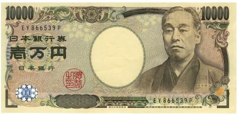

by山田羊（山田ヒツジ）
|
❤❤ 諭吉好可愛喔 ❤❤ |
我也想要有諭吉~♥♥ |

不是這個諭吉啦! 但要是這個諭吉也可以啦⁽⁽٩(๑˃̶͈̀ ᗨ ˂̶͈́)۶⁾⁾ |
東京都東京都是位於日本關東地方的一級行政區，也是日本實際上的首都，是日本唯一以「都」命名的行政區。面積在日本一級行政區中排名第45位，但日本最南端和最東端均位於其轄區內，因此擁有日本各一級行政區中最大的經緯度跨度。截至2022年，全境人口已超過1,400萬，是日本人口最多的一級行政區 |